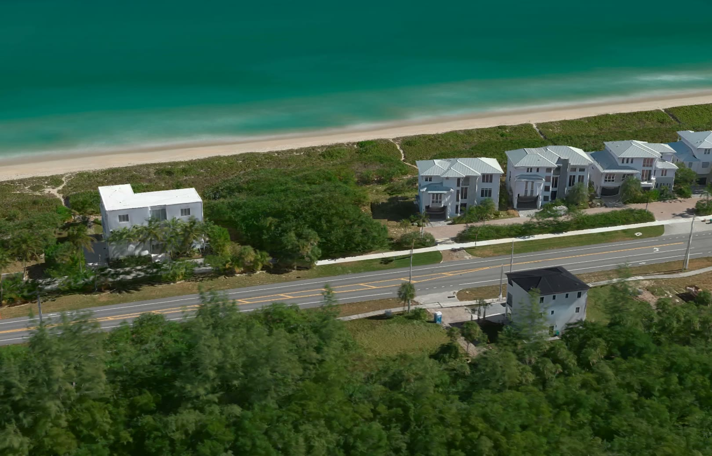
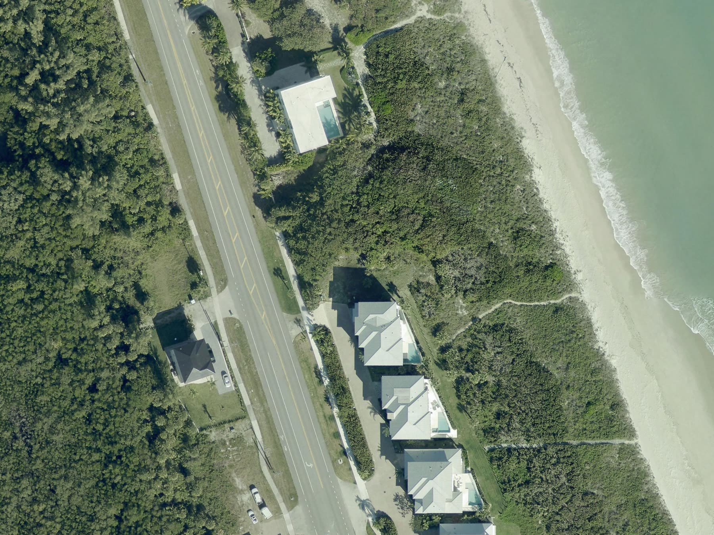

The lotA place to build, a short walk from the Atlantic.
A vacant 0.38 acre homesite for sale on Hutchinson Island, with the driveway already in.
$525,000
4507 N Highway A1A, Hutchinson Island, Florida. For sale by owner.
Call 772-309-3909Under five minutes on foot to
the
beach.
Room for a three-story home. The county allows up to 35 feet here. No HOA fees.
The lot

The lot Beach- Size
- 0.38 acres
- Area
- 16,552 sq ft
- Beach entrance
- Under 5 min on foot
- Zoning
- Residential (HIRD)
- Building height
- Up to 35 ft
- Driveway
- Already in
- HOA fees
- None
- Status
- Vacant, ready for plans
Queens Island Preserve, Block B, Lot 1. St. Lucie County. Neighboring construction may offer helpful insight into foundation requirements and building costs.
Build your dream by the beach.
A permanent home, a vacation getaway, or a custom build around the Florida lifestyle. Call to walk the lot.
772-309-3909